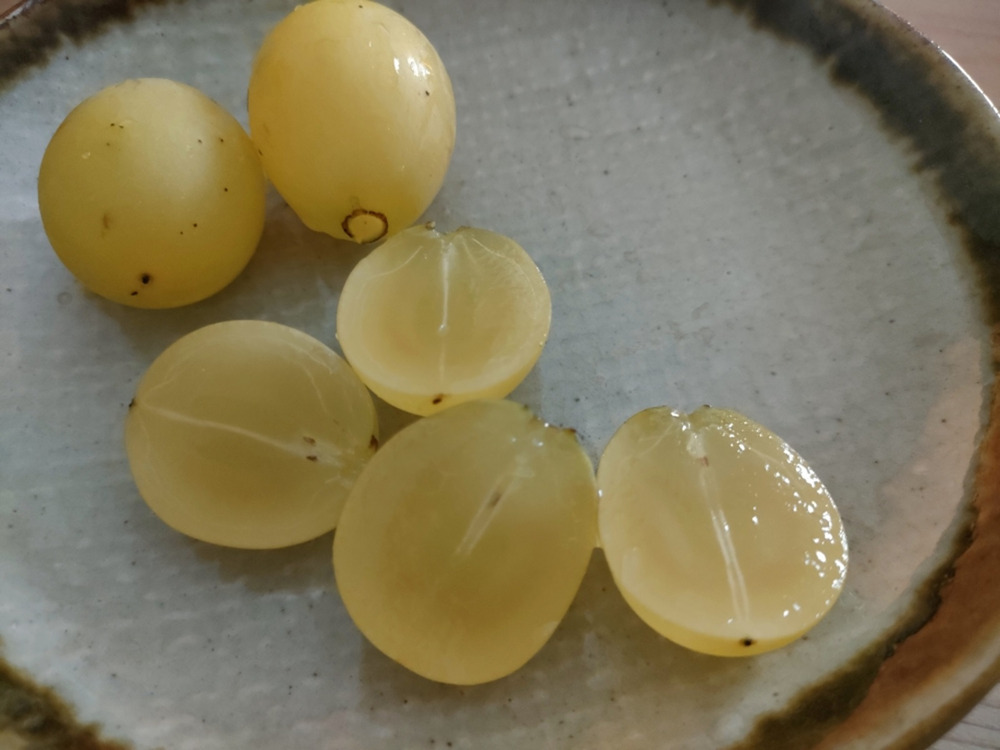

0007 安芸クイーン

こんばんは、hanaponです。
９月に入り、私の好きなぶどうの季節がやってまいりました！
スーパーを見ると、岡山県や広島県産のピオーネやシャインカスカットなどが店頭に並んでいます。
私はウィンドショッピング的にぶどうを含む果物の産地と商品、包み方などを見るのがとても好きなのです。
さて、ポタリング中に店先等で並んでいたら迷わず買い占めたい（笑）と思う品種は「安芸クイーン」と呼ばれるぶどうです。
関東ではあまりなじみがなく、東京の実家にこのぶどうを送ったら大変喜んでくれました。
サムネイル画像は私が購入したぶどうですが、ルビー色に近いものもあるようです。 これは土の成分による、と記載しているホームページもありました。

多くはジベレリン処理されており、種無しなのが残念ではありますが、 上品で濃厚な甘味は疲れた？頭や体にはもってこいです（←働いてなかろうに？、と言わないで（笑）。